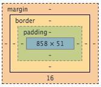

Margins v. Borders v. Padding
Every object (e.g. 'div', 'p', 'section') has four attributes that can be modified that will affect size and spacing of the object. They are margin, borders, padding, and the content itself. Below is a diagram:

You have the content (in blue) with the padding wrapped around it, followed by the border wrapped around the padding, followed by the margin wrapped around the border. You can adjust the size of all of these idividually as well as adjusting a single side of each part.
I personally like to group the four together as content-border and padding-margin. You can manipulate the color of the content and the border while padding and margin create space between their surroundings (padding creates space between the content and the border while while margin creates space between the border and another object).
Manipulating each of these is extremely easy in CSS. Within the code for your given selector, you can use "margin: 20px;" to give the entire margin a size of 20 pixels. If you wanted to only assign a size of the left margin you would use "margin-left: 20px;". You can replace "left" with "right", "top", or "bottom" to adjust each of those individually. Adjust the padding of any object by replacing "margin" with "padding" in any of the previous examples.
You can adjust many attributes of the content. Use "color: red;" to change the text color of the object to red.
To change the background color of the object to gray, use "background-color: gray;"
Use "width: 200px; height: 450px" to make the content of the object 200 pixels wide by 450 pixels high. However sometimes you want to make the object a dynamic size that adjusts to the size of the browser window and an example of that would be "width: 50%;"
Borders are another attribute of an object that can appear so you can change such things about them as color, size, dashed/solid, etc. To create a solid, orange, 5 pixel wide border around your object, you would use "border: 5px solid orange". You can replace "solid" with "dashed" and "orange" with many color names or, alternatively, their hex code (e.g. #00ffa3).
Similar to margins and padding, you can alter a single side of a border by using "border-left", "border-right", "border-top", or "border-bottom".
Initial Thoughts on Dev Bootcamp
I am really excited to be a part of Dev Bootcamp. The program seemingly embraces many of the same beliefs I hold while also challenging a lot of shortcomings I believe I possess.
Taking charge of my life is a fairly new concept to me. My struggles with ADD have often left me feeling unduly inadequate and as a product I have rarely felt capable of making the decisions in life that my peers have made. The past couple years, though, have forged something within that has readied me for my breaking point. The decision to apply to and enroll in Dev Bootcamp is my first step of taking control of my life. And it feels really awesome. This is why hearing Shereef discuss the Kitchen vs. Table mindset is both exciting and intimidating. It's all about taking control.
It's definitely going to be a test to try to maintain a kitchen mindset. Similar to what Shereef described, I have had a history of being a subordinate to my teachers. I tend to not think of myself as a peer and I have to remind myself that an education requires teamwork. I want to learn how to revel and thrive in the creator mindset not only for my own benefit but for the benefit of my DBC teachers and my fellow students.
Of the two basic fears discussed in the fireside discussion, the first resonates deeply with me. I absolutely experience impostor syndrome. Actually, I did exactly what he set as an example. When I received my acceptance email, after the initial jubilation, my first thought was, "This was a fluke. I tricked them," followed by something worse, "Maybe their standards are lower than I thought they were."
The first week of DBC has been a rollercoaster. At first I was incredibly intimidated. Then my intro session helped ease many of my concerns. Then I hit some speedbumps in a couple of the early challenges, followed by figuring them out and flying high for a while. The best thing I've learned from the first week is that I can do this. I care about this and it turns out that makes a big ass difference. Despite not contributing a ton and also being slightly intimidated by the sheer volume of posts, the Google + community has been so supportive. Dev Bootcamp has done a wonderful job of selecting participants who embrace their philosphies. It feels so so good to be at school and feel safe and feel capable. I think I'm going to thrive in Phase 1-3. Phase 0 will be more challenging because I absolutely appreciate a submersive environment and working with people, but I've learned that I can do this.
There are going to be days when I shut down. When I feel like I'm going to fail. So far, the only remedy has been to keep going. I think it will always be the only remedy. I'm excited to learn I'm capable of GOING.
Overall, I keep coming back to peace. I have found some amount of peace in my life. Knowing that I have chosen to do something hard and that it feels like something I can do. It's something I can be proud of and I can already feel my confidence growing. Not only in my ability to be a student again but throughout my life. It's nice to take control. It's nice to be in the Kitchen.
My First Dev Bootcamp Blog Post!
Let's get straight to it! Version Control
When playing a complex, open-world video game, you're faced with many decisions which can greatly affect your path going forward. Sometimes, before making a big decision, I will create a new save point and then continue the game, maybe creating a few more save points along the way. If I don't like how things panned out, I can go back to that initial save point and change my decision. My favorite way to think about version control is like save points in a video game. Version control is a tool within git to make save points/checkpoints. When you commit a new version of a file, not only is the file saved, but it also tracks changes from the previous version. You can see additions, subtractions and edits. This allows you the opportunity to keep many checkpoints (commits) of your code so that when you screw something up, you can just go back to a moment in time when everything was good!
Now, what's super interesting about version control is that it is a remarkably useful tool for group projects. It allows for multiple people to work on the same file concurrently, since it only takes note of CHANGES to the file. If I'm working on paragraph one of a blog post, Lisa can work on paragraph five and we can each save our changes and everything will be groovy.
When modifying files using git, there are three different stages a file can be in:
Working - The file is unstaged and has been modified since the previous commit (or has never been committed).
Staged - The files modifications have been noted and the file is prepared to be committed. I kinda think of this stage as a kind of file purgatory. It has been changed, it has been sort of set, but it has yet to be committed. It's rough being a file in staging...
Committed - Committing a file means you have made a hard checkpoint of the file that can be referenced later and reverted back to if need be.
Now We Get to Github
Github is like Dropbox for your git managed repositories. It is a cloud-based client from which you and others can access your repositories.
This is useful for many reasons. For one, you have your code available to you wherever you go. Secondly, you have a centralized location to refer friends, colleagues, and others to so they can view your code. But finally, maybe the most crucial function of Github is that it provides developers the means to collaborate with many people on a single project. It manages files and changes to files and provides ways for multiple users to observe when files change and how they change. Developers can easily go back to prior versions of code or make entirely different branches of the repository to toy around with until they're happy with the results and can merge it back to the main branch. Github is a remarkably smart tool for managing all your repository needs! (Github, you can paypal me later)
-- I'm really looking forward to challenging myself with this blog. I don't usually enjoy sharing my creative output, but I think this will be a really valuable learning experience in not only getting comfortable with doing so but also cultivating my presence online. This posting was incredibly within the lines and I look forward to getting more creative! See you all soon!